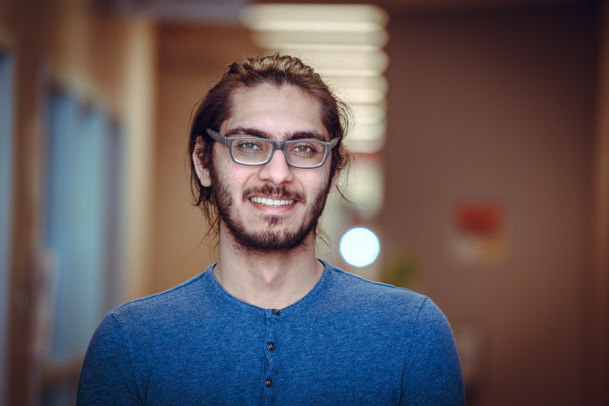

À mon propos
Je suis un étudiant international à la Memorial University of Newfoundland.
J'ai vécu la majeure partie de ma vie à Madagacar, et ai quitté ce bout de paradis en 2017 pour venir étudier en Terre-Neuve et Labrador.
Je parle le français et l'anglais fluemment, le gujrati et l'espagnol à un niveau intermédiaire, ainsi que le hindi et le malgache à un niveau débutant.
Éducation
Bachelor de Sciences
attendu 2021.
Memorial University of Newfoundland.
Majeur en Sciences Informatiques.
Baccalauréat Scientifique
Juin 2017
Lycée Français de Tananarive
Spécialité Informatique et Sciences du Numérique, option Grec Ancien et Escalade.
Éxperiences
Assistant de bureau et à la programmation
Janvier 2018 au présent
Association Communautaire Francophone de St. Jean
Sous le titre vague d'asistant de bureau, mes résponsabilités incluent:
- créer et maintenir des outils informatique afin de faciliter les tâches répétitives,
- assister l'équipe administratives dans les tâches journalières, ainsi que lors de la mise en place et la réalisation des activités et événement,
- administrer les ressources au sein de la bibliothèque (catalogage, emprunts, retours), ainsi que les profils d'utilisateurs, à travers un logiciel spécialisé,
- prendre des photos des activités et participants,
- acceuillir et diriger les visiteurs.
Projets entrepris:
- création de scripts batch divers,
- création de scripts Python permettant la récupération de données de notre base de données, basé sur MySQL,
- création d'un outil de conversion de notices, du format UNIMARC au format MARC21, basé sur la base de donnée de la Bibliothèque Nationale de France, utilisant Python,
- mise à niveau de l'infrastructure informatique de l'Association et de sa présence en ligne à travers son site web.
Tutorat de français
Juin 2018 au présent
Memorial University of Newfoundland
En tant que tuteur j'ai travaillé sous la direction de Camilla Stoodley, officier de liaison du programme français à MUN. J'ai organisé des sessions en-ligne et hors-ligne avec des étudiants afin de repasser à travers le contenu étudié en cours, les aider à pratiquer et s'améliorer, ainsi que des activités d'entraînement à l'examen du DELF.
Plateforme d'apprentissage de grec ancien
Septembre 2016 au juillet 2017
Lycée Français de Tananarive
Création d'une plateforme d'apprentissage et d'enseignement pour le grec ancien. Basé sur Moodle, et utilisant du contenu créé par mon professeur ainsi que moi-même, contenant des modules d'examens pour les apprenants.
Leader Tech
Enactus Memorial
Travaillant sur des projets divers, j'ai eu l'occasion de participer à des efforts hautement collaboratifs et multi-disciplinaires.
De nombreux outils et aspects ont été explorés, tels que le LEMP stack, module mDNS, divers projets open-source tels Moodle, Khan Academy Lite, Kiwix, distribution Linux basée sur Debian RaspbianOS, script Bash.
Développeur
Paradigm Hyperloop
Élaboration de différents outils pour communiquer avec le Pod, gérer le flux de données entrant et sortant. Outils utilisés: Flask, Bootstrap, JavaScript, InfluxDB, Google Protocol Buffer, Grafana, programmation de socket réseau.
Mentions mémorables
Dopamine - traduction
Ai participé dans un projet open-source en proposant une traduction française améliorée.
course_notes
Ai créé un modèle pour la prise de notes en cours. Utilisant les modules de Github Pages (Ruby et Jekyll), permettant la transformation de texte au format Markdown, y compris formules mathématiques, en page web automatiquement.
Gasy Vert
September 2016 au July 2017
Lycée Français de Tananarive
En tant que membre du groupe de développement durable "Gasy Vert" durant mes années de lycée j'ai pu participer à différents événements, sensibiliser le corps étudiant aux problèmes du réchauffement climatique, ainsi que de représenter le corps étudiant lors de réunions, et de présenter des projets à l'administration du lycée.
Sommet International de la Francophonie
Novembre 2016
Prenant place à Madagascar en 2016, j'ai été choisi pour participer à des activités de débats et conversations.
Cérémonie de graduation de lycée
Juillet 2017
Marquant la fin de mes années de lycée, j'ai été honoré de parler lors de la cérémonie de graduation, durant laquelle j'ai pu introduire le parain de graduation de l'année.